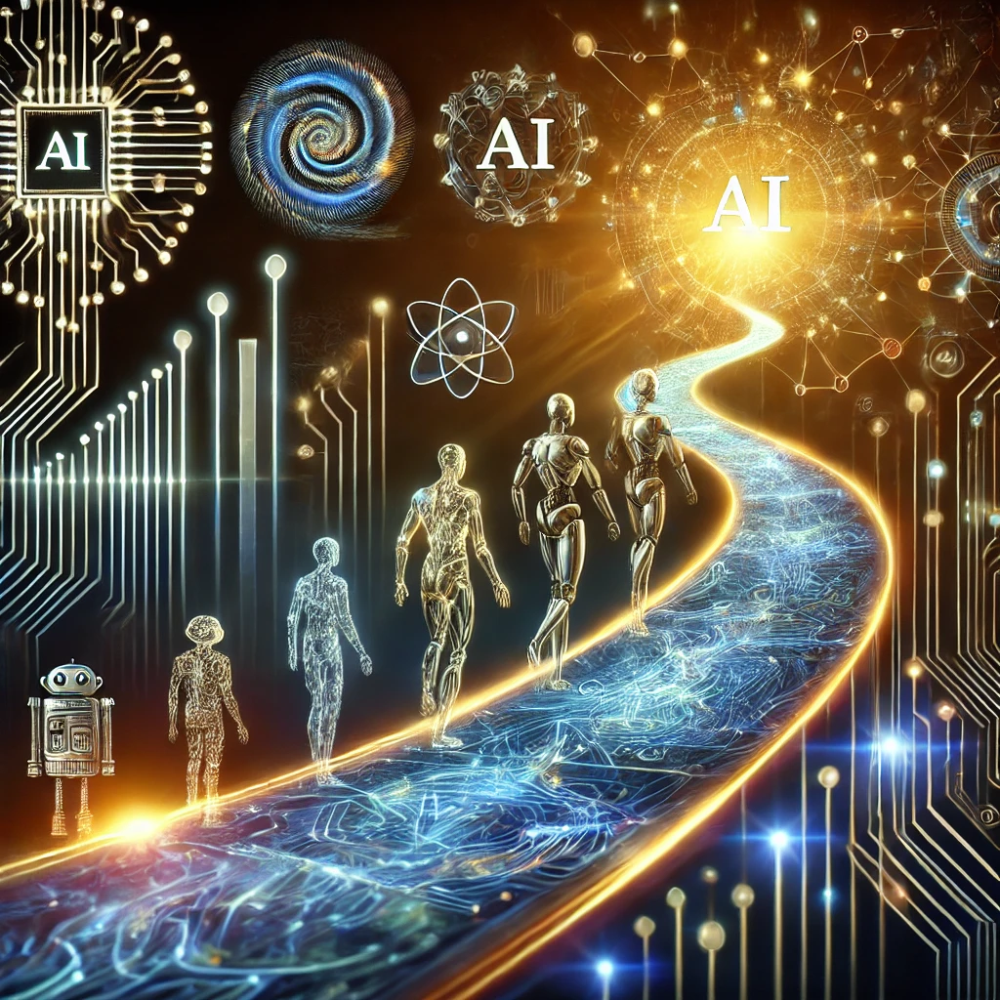
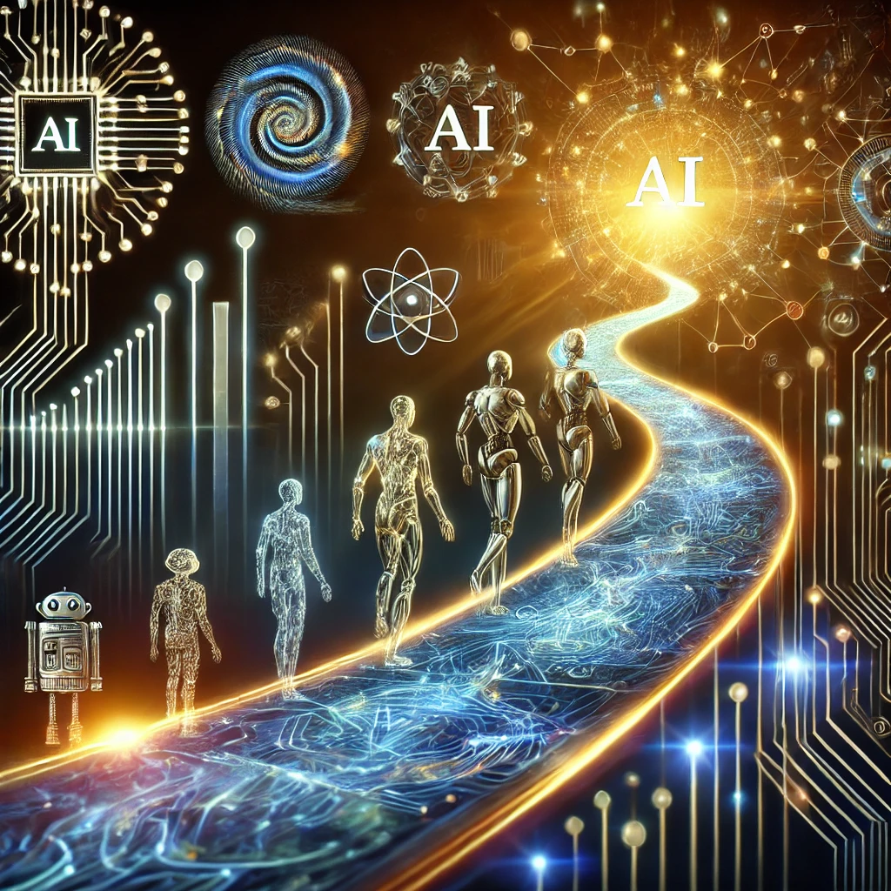

Rise of Artificial General Intelligence: Risks and Opportunities
Author: Giorgio Buttazzo
Qualifications: Department of Excellence on Robotics and AI, Sant'Anna School of Advanced Studies, Pisa, Italy
Artificial intelligence is making extraordinary progress with an unprecedented rate...
- Will machines ever surpass human intellectual capacities?
- What will happen next?
- What will be the impact on our society?
- What are the jobs that artificial intelligence puts at risk?
1. Introduction
In 2001, a perspective article published in IEEE Computer, entitled “Artificial Consciousness: Mission Impossible?” Buttazzo (2001) supported a line of thought aimed at showing that there are no conceptual obstacles to the development of conscious machines, observing that all the criticisms raised over the years to undermine this possibility can easily be disassembled with logical reasoning and scientific evidence.
Then, it illustrated how to predict when the conditions necessary for the development of conscious machines can be reached, indicating year 2029 as a possible date.
After more than twenty years and in light of the most recent advances in artificial intelligence, is this estimate still realistic? Is the disruptive event referred to as “technological singularity” in which machines will reach human intellectual abilities ever closer? What will happen next? What will change in society? What are the jobs that artificial intelligence puts at risk? Thinking about these questions is of fundamental importance to predict possible future scenarios and prepare ourselves to face the consequences.
This article traces the main milestones that led to the development of deep learning, illustrating the current capabilities of existing neural models and discussing the possible risks and opportunities of this technology, both in the short and long terms.
2. Evolution of Neural Networks
Artificial intelligence, particularly artificial neural networks, has a fluctuating path with periods of enthusiasm and little interest. The binary threshold neuron, proposed in 1943, was not capable of learning and was mainly used to simulate biological neural circuits.
In 1949, Canadian psychologist Donald Hebb discovered that learning only operates on synaptic connections, which modulate communication between neurons. Rosenblatt developed the first model of artificial neuron capable of learning, the Perceptron, in 1957.
This model had variable weights that could be modified according to the error committed by the neuron, allowing it to associate inputs with desired output values.
However, interest in neural networks declined in 1969 when the Perceptron failed to learn the simple logic function of a two-input exclusive OR. Interest in neural networks revived in the early 1980s with Hopfield's proposed model of an associative memory, Reinforcement Learning, and Backpropagation.
Neural networks have been used to solve various problems in various sectors, but there were no substantial theoretical advances until the end of the 20th century.
3. Explosion of Deep Learning
. Explosion of deep learning In the early 2000s, neural network research experienced a huge upswing thanks to a number of conjoint factors. The first factor is of a theoretical nature: once the problems that hindered the training of multi-layered networks were understood, various solutions were devised to overcome those limitations and train networks with thousands of neurons organized in numerous layers: deep neural networks.
The second factor is of a technological nature. Around 2006, computing architectures based on graphics processing units (GPUs), originally designed to parallelize graphics operations, were modified to also perform vector computations, such as those required to run a neural network, and became widespread on the market at an affordable cost. The third factor is instead of economic nature.
The first results obtained with deep neural networks have attracted the interest of large companies, such as Google, Microsoft, and Facebook which, managing an enormous amount of data, have seen in neural networks a great opportunity to solve image classification problems, recognition of faces, sounds, voices, and have therefore begun to invest large amounts of resources in this sector. Then, the rapid evolution of cloud computing, public repositories, and high speed communication networks gave the possibility to many researchers to exploit such data to train and test new machine learning models. Finally, another element that contributed to the evolution of deep networks was the international competition ImageNet,2 or more precisely the “ImageNet Large-Scale Visual Recognition Challenge” (ILSVRC), a sort of annual computer vision Olympics, born in 2010 to stimulate the development of algorithms for solving complex problems, such as image classification and segmentation.
Below Figure illustrates how the classification error of the algorithms that won the competition has reduced over the years, from 2010 to 2017.

To have a more realistic prediction, it must be said that current machine learning models have several shortcomings that should necessarily be overcome before they can be used in safety-critical systems, as autonomous cars, planes, trains, and robots.
For instance, AI algorithms can react in unexpected ways when asked to take decisions in corner situations badly covered by training. They are also prone to cyber attacks (also called adversarial attacks), which can cause a neural model to provide a wrong output by slightly modifying the input so that it appears genuine to humans (Yuan et al., 2019). Finally, given the high societal impact of deep neural networks and AI in general, their use and deployment will probably be regulated by governments, as it is done in the field of genetic engineering. Considering such collateral issues, the reach of the singularity could be delayed by some years, appearing between 2040 and 2050 (Müller and Bostrom, 2016).
It is worth noting that the singularity refers to the moment in which machines match human intelligence not only in some specific fields, but in all human activities. This type of artificial intelligence is defined as artificial general intelligence (AGI), indicating an intellectual ability in all fields of knowledge.
4.The Future
"The ability of a digital computer or computer-controlled robot to perform tasks
commonly associated with intelligent beings."
Artificial Intelligence —
Britannica
The Role of AI in the Workplace Today
AI is already significantly transforming the workplace. Below are some key areas where AI is currently making an impact:
1. Personal and Professional AI Tools:
- Virtual assistants like Google Assistant, Alexa, and Siri.
- Chatbots for customer interactions and employee support.
- Automated screening tools for job applications.
2. Industry-Specific Applications:
- Manufacturing: AI-driven product design, predictive maintenance, and automation of manufacturing processes.
- Healthcare: Enhanced diagnostic accuracy, accelerated drug discovery, and improved patient management.
- Energy: AI-powered energy-efficient solutions, reducing waste and optimizing usage.
3. Future Trends and Innovations:
The future of AI promises even more groundbreaking developments, including:
- AI in Education: Personalized learning experiences for students and intelligent tutoring systems.
- AI in Autonomous Vehicles: Further advancements in self-driving car technology, improving safety and efficiency.
- AI for Sustainability: Using AI to tackle climate change, improve agriculture, and develop more efficient systems for resource management.
4. Ethical and Social Implications:
As AI continues to evolve, it raises important ethical questions about privacy, fairness, accountability, and the impact on jobs and society.
The Future of AI
As AI technology continues to evolve, its potential applications and impact on society are vast. AI will not only transform industries but also create new opportunities and challenges for humanity.
1. AI in Healthcare
AI is expected to revolutionize healthcare, with advancements in personalized medicine, early diagnosis, and robotic surgery. AI can analyze vast amounts of medical data, helping doctors provide more accurate diagnoses and treatment plans. Additionally, AI-powered wearable devices will enable real-time health monitoring and early detection of diseases.
2. AI in Autonomous Systems
Self-driving cars, drones, and robots powered by AI will reshape transportation, logistics, and other industries. Autonomous systems will become more efficient, reducing human error and improving safety. However, they also pose significant regulatory and ethical challenges that will need to be addressed.
3. AI and Ethics
As AI becomes more integrated into everyday life, the ethical implications of its use will become increasingly important. Issues such as data privacy, bias in algorithms, and the impact of automation on jobs will need to be addressed to ensure AI benefits society as a whole.
4. AI and Creativity
AI is also making strides in creative fields such as music, art, and writing. AI-generated content is becoming more sophisticated, and we may see AI working alongside human creators to produce innovative works. However, this also raises questions about authorship and originality.
5. AI and Job Automation
AI's ability to automate tasks traditionally performed by humans will continue to disrupt job markets. While AI can increase efficiency and productivity, it will also require workers to adapt by learning new skills and focusing on roles that require emotional intelligence, creativity, and complex decision-making.
6. The Long-Term Vision: Artificial General Intelligence (AGI)
Artificial General Intelligence (AGI) represents the ultimate goal of AI research, where machines possess human-like cognitive abilities across a wide range of tasks. While AGI remains a distant goal, its development could lead to transformative changes in society, both positive and negative. Ensuring the safe development of AGI will be crucial for the future of AI.

The Role of AI in the Workplace Today
AI is already significantly transforming the workplace. Below are some key areas where AI is currently making an impact:
1. Personal and Professional AI Tools:
- Virtual assistants like Google Assistant, Alexa, and Siri.
- Chatbots for customer interactions and employee support.
- Automated screening tools for job applications.
2. Industry-Specific Applications:
- Manufacturing: AI-driven product design, predictive maintenance, and automation of manufacturing processes.
- Healthcare: Enhanced diagnostic accuracy, accelerated drug discovery, and improved patient management.
- Energy: AI-powered energy-efficient solutions, reducing waste and optimizing usage.
3. Future Trends and Innovations:
The future of AI promises even more groundbreaking developments, including:
- AI in Education: Personalized learning experiences for students and intelligent tutoring systems.
- AI in Autonomous Vehicles: Further advancements in self-driving car technology, improving safety and efficiency.
- AI for Sustainability: Using AI to tackle climate change, improve agriculture, and develop more efficient systems for resource management.
4. Ethical and Social Implications:
As AI continues to evolve, it raises important ethical questions about privacy, fairness, accountability, and the impact on jobs and society.
The Future of AI
As AI technology continues to evolve, its potential applications and impact on society are vast. AI will not only transform industries but also create new opportunities and challenges for humanity.
1. AI in Healthcare
AI is expected to revolutionize healthcare, with advancements in personalized medicine, early diagnosis, and robotic surgery. AI can analyze vast amounts of medical data, helping doctors provide more accurate diagnoses and treatment plans. Additionally, AI-powered wearable devices will enable real-time health monitoring and early detection of diseases.
2. AI in Autonomous Systems
Self-driving cars, drones, and robots powered by AI will reshape transportation, logistics, and other industries. Autonomous systems will become more efficient, reducing human error and improving safety. However, they also pose significant regulatory and ethical challenges that will need to be addressed.
3. AI and Ethics
As AI becomes more integrated into everyday life, the ethical implications of its use will become increasingly important. Issues such as data privacy, bias in algorithms, and the impact of automation on jobs will need to be addressed to ensure AI benefits society as a whole.
4. AI and Creativity
AI is also making strides in creative fields such as music, art, and writing. AI-generated content is becoming more sophisticated, and we may see AI working alongside human creators to produce innovative works. However, this also raises questions about authorship and originality.
5. AI and Job Automation
AI's ability to automate tasks traditionally performed by humans will continue to disrupt job markets. While AI can increase efficiency and productivity, it will also require workers to adapt by learning new skills and focusing on roles that require emotional intelligence, creativity, and complex decision-making.
6. The Long-Term Vision: Artificial General Intelligence (AGI)
Artificial General Intelligence (AGI) represents the ultimate goal of AI research, where machines possess human-like cognitive abilities across a wide range of tasks. While AGI remains a distant goal, its development could lead to transformative changes in society, both positive and negative. Ensuring the safe development of AGI will be crucial for the future of AI.
